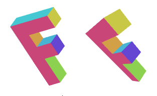

WebGL 3D - Перспектива
Эта статья продолжает серию статей о WebGL. В первой из них мы начали с основ WebGL, а в предыдущей рассмотрели основы 3D. Если вы их ещё не читали, рекомендую ознакомиться сначала с ними.
В последней статье мы узнали, как создать 3D, но это 3D не содержит перспективы. В ней использовалcя так называемый "ортографический" вид, который имеет свои области применения, но обычно мы не имеем ввиду ортографию, когда говорим "3D".
Итак, нам нужна перспектива. Но что такое перспектива? Простыми словами, это такая штука, которая заставляет объекты, которые находятся далеко, выглядеть меньше.

На примере выше мы видим, что далёкие объекты отображаются меньшими. Чтобы добиться эффекта, который демонстрируется на примере выше, есть несложный способ - можно делить X и Y пространства отсечения на Z.
Поясню на конкретном примере. Допустим, у нас есть линия от (10, 15) до (20,15), то есть 10 единиц длиной. В нашем примере она бы отрисовалась длиной в 10 пикселей. Но если мы разделим на Z, то при Z=1 мы получим
10 / 1 = 10 20 / 1 = 20 abs(10-20) = 10
линию в 10 пикселей. При Z=2 мы получим
10 / 2 = 5 20 / 2 = 10 abs(5 - 10) = 5
линию в 5 пикселей. А при Z=3 будет
10 / 3 = 3.333 20 / 3 = 6.666 abs(3.333 - 6.666) = 3.333
Как видите, с увеличением Z и отдалением объекта он становится меньше. Если мы выполняем деление в пространстве отсечения, мы можем получить лучшие результаты, потому что значение Z будет меньшим (от -1 до +1). А если мы ещё добавим fudgeFactor (настроечный параметр - прим.пер.), и умножим на него Z перед выполнением деления, мы сможем контролировать, насколько меньше будут объекты для данного расстояния.
Попробуем это на практике. Сначала изменим вершинный шейдер, чтобы в нём происходило деление на Z, которое предварительно было умножено на "fudgeFactor".
<script id="vertex-shader-3d" type="x-shader/x-vertex">
...
+uniform float u_fudgeFactor;
...
void main() {
// Умножаем координату на матрицу
vec4 position = u_matrix * a_position;
+ // Задаём значение z, на которое произойдёт деление
+ float zToDivideBy = 1.0 + position.z * u_fudgeFactor;
* // Делим x и y на z
* gl_Position = vec4(position.xy / zToDivideBy, position.zw);
}
</script>
Обратите внимание, что из-за того, что Z находится в пространстве
отсечения от -1 до +1, я добавил 1, чтобы получить zToDivideBy
в интервале от 0 до +2 * fudgeFactor
Код также нуждается в редактировании для использования fudgeFactor.
...
var fudgeLocation = gl.getUniformLocation(program, "u_fudgeFactor");
...
var fudgeFactor = 1;
...
function drawScene() {
...
// Задаём fudgeFactor
gl.uniform1f(fudgeLocation, fudgeFactor);
// Отрисовываем геометрию
var primitiveType = gl.TRIANGLES;
var offset = 0;
var count = 16 * 6;
gl.drawArrays(primitiveType, offset, count);
И вот результат:
Если вы не можете понять по картинке, что происходит, попробуйте переместить слайдер "fudgeFactor" от 1.0 до 0.0, и вы увидите, как выглядела 'F' до того, как мы добавили деление на Z.

Более того, оказывается, что WebGL принимает переданные в вершинном шейдере значения x,y,z,w и делит их на w автоматически.
Мы можем воспользоваться этим очень легко, достаточно не выполнять деление
в шейдере самим, а передать zToDivideBy в gl_Position.w.
<script id="vertex-shader-2d" type="x-shader/x-vertex">
...
uniform float u_fudgeFactor;
...
void main() {
// Умножаем координату на матрицу
vec4 position = u_matrix * a_position;
// Задаём значение z, на которое произойдёт деление
float zToDivideBy = 1.0 + position.z * u_fudgeFactor;
// Делим x, y и z на zToDivideBy
* gl_Position = vec4(position.xyz, zToDivideBy);
// Передаём цвет во фрагментный шейдер
v_color = a_color;
}
</script>
Теперь взгляните - мы получили то же самое.
Почему нам полезен тот факт, что WebGL автоматически выполняет деление на W? Потому что с использованием всё той же матричной магии мы можем использовать ещё одну матрицу, чтобы копировать z в w.
Следующая матрица
1, 0, 0, 0, 0, 1, 0, 0, 0, 0, 1, 1, 0, 0, 0, 0,
копирует z в w. Вы можете понимать каждую из колонок как
x_out = x_in * 1 +
y_in * 0 +
z_in * 0 +
w_in * 0 ;
y_out = x_in * 0 +
y_in * 1 +
z_in * 0 +
w_in * 0 ;
z_out = x_in * 0 +
y_in * 0 +
z_in * 1 +
w_in * 0 ;
w_out = x_in * 0 +
y_in * 0 +
z_in * 1 +
w_in * 0 ;
что в упрощённом виде
x_out = x_in; y_out = y_in; z_out = z_in; w_out = z_in;
Мы можем добавить 1, которая у нас была раньше, с помощью матрицы,
так как нам известно, что w_in всегда равняется 1.0.
1, 0, 0, 0, 0, 1, 0, 0, 0, 0, 1, 1, 0, 0, 0, 1,
Это изменит вычисление W на следующее:
w_out = x_in * 0 +
y_in * 0 +
z_in * 1 +
w_in * 1 ;
а так как w_in = 1.0, то можно записать
w_out = z_in + 1;
Наконец, мы можем вернуть fudgeFactor с помощью матрицы
1, 0, 0, 0, 0, 1, 0, 0, 0, 0, 1, fudgeFactor, 0, 0, 0, 1,
что означает
w_out = x_in * 0 +
y_in * 0 +
z_in * fudgeFactor +
w_in * 1 ;
и в упрощённом виде
w_out = z_in * fudgeFactor + 1;
Теперь изменим программу снова, чтобы использовать только матрицы.
Сначала вернём обратно простой вершинный шейдер.
<script id="vertex-shader-2d" type="x-shader/x-vertex">
uniform mat4 u_matrix;
void main() {
// Умножаем координату на матрицу
gl_Position = u_matrix * a_position;
...
}
</script>
Теперь сделаем функцию создания матрицы Z → W
function makeZToWMatrix(fudgeFactor) {
return [
1, 0, 0, 0,
0, 1, 0, 0,
0, 0, 1, fudgeFactor,
0, 0, 0, 1,
];
}
и изменим код, чтобы матрица использовалась
...
// Задаём матрицы
* var matrix = makeZToWMatrix(fudgeFactor);
* matrix = m4.multiply(matrix, m4.projection(gl.canvas.clientWidth, gl.canvas.clientHeight, 400));
matrix = m4.translate(matrix, translation[0], translation[1], translation[2]);
matrix = m4.xRotate(matrix, rotation[0]);
matrix = m4.yRotate(matrix, rotation[1]);
matrix = m4.zRotate(matrix, rotation[2]);
matrix = m4.scale(matrix, scale[0], scale[1], scale[2]);
...
И снова у нас получился прежний результат.
Всё это было проделано, чтобы показать вам, что деление на Z даёт нам перспективу, и что WebGL к нашему удобствую выполняет деление на Z сам.
Но проблемы на этом не кончаются. Например, если установить значение Z около -100, вы увидете картину, которая продемонстрирована на следующей анимации

Что происходит? Почему F начинает пропадать раньше времени? Всё потому, что WebGL отсекает Z от -1 до +1, как он отсекал ранее X и Y. Мы видим, что пропадают значения Z < -1.
Я бы мог пуститься в детали о математике для устранения такого поведения, но вы можете выяснить это и сами, принцип тот же самый, что и в 2D-проекции. Нам нужно взять Z, добавить некоторое число, масштабировать на некоторую величину, и мы сможем привести любой диапазон к значениям от -1 до +1.
Хорошая новость в том, что все эти шаги можно сделать в 1 матрице. Более
того, вместо fudgeFactor мы используем fieldOfView, и у нас сразу
будут все нужные значения.
Ниже приводится функция создания матрицы.
var m4 = {
perspective: function(fieldOfViewInRadians, aspect, near, far) {
var f = Math.tan(Math.PI * 0.5 - 0.5 * fieldOfViewInRadians);
var rangeInv = 1.0 / (near - far);
return [
f / aspect, 0, 0, 0,
0, f, 0, 0,
0, 0, (near + far) * rangeInv, -1,
0, 0, near * far * rangeInv * 2, 0
];
},
...
Эта матрица сделает все преобразования за нас. Она преобразует входные
единицы в пространство отсечения, сделает возможным передачу угла для
пересчёта его в поля зрения, а также позволит нам выбрать значение
отсечения по координате Z. Предполагается, что в начале координат
(0, 0, 0) есть наблюдатель или камера, а на основании zNear и
fieldOfView происходит вычисление, чтобы zNear совпадало со значением
Z = -1, а точки в zNear, на половину значения fieldOfView выше или ниже
центра, совпадали с Y = -1 и Y = 1 соответственно. Значение X вычисляется
просто через умножение на aspect. Обычно ему устанавливается значение
width / height видимой области. Наконец, происходит вычисление, насколько
нужно масштабировать объекты по Z, чтобы область zFar заканчивалась на Z = 1.
Вот схема работы матрицы в действии.
Фигура, которая выглядит как 4-сторонний конус, внутри которой вращаются
3 куба, называется "фрустум". Матрица конвертирует пространство внутри
фрустума в пространство отсечения. zNear определяет, где будет происходить
отсечение на фронтальной плоскости, zFar определяет место отсечения на
задней плоскости. Установите zNear в значение 23 и вы увидите, что передняя
часть вращающихся кубов отрезалось. Установите zFar в значение 24, и
задняя часть кубов отсечётся таким же образом.
У нас осталась всего одна проблема. Матрица предполагает, что наблюдатель находится в 0,0,0 и смотрит в направлении отрицательного значения Z, а положительное значение Y указывает вверх. Наши матрица до этого момента работали по-другому. Чтобы исправить это поведение, нам нужно поместить наши объекты впереди камеры.
Мы могли бы сделать это, переместив нашу букву F. Ранее отрисовка происходила в (45, 150, 0). Давайте сместим её в (-150, 0, -360).
Для этого нам нужно просто заменить прошлый вызов m4.projection
на новый m4.perspective.
var aspect = gl.canvas.clientWidth / gl.canvas.clientHeight;
var zNear = 1;
var zFar = 2000;
var matrix = m4.perspective(fieldOfViewRadians, aspect, zNear, zFar);
matrix = m4.translate(matrix, translation[0], translation[1], translation[2]);
matrix = m4.xRotate(matrix, rotation[0]);
matrix = m4.yRotate(matrix, rotation[1]);
matrix = m4.zRotate(matrix, rotation[2]);
matrix = m4.scale(matrix, scale[0], scale[1], scale[2]);
И вот что мы получим.
Мы вернулись к тому, что нам достаточно умножить матрицу и мы получим и поле зрения, и возможность задать пространство по Z. Мы ещё не закончили, но статья начинает становиться устрашающе длинной. Далее - камеры.